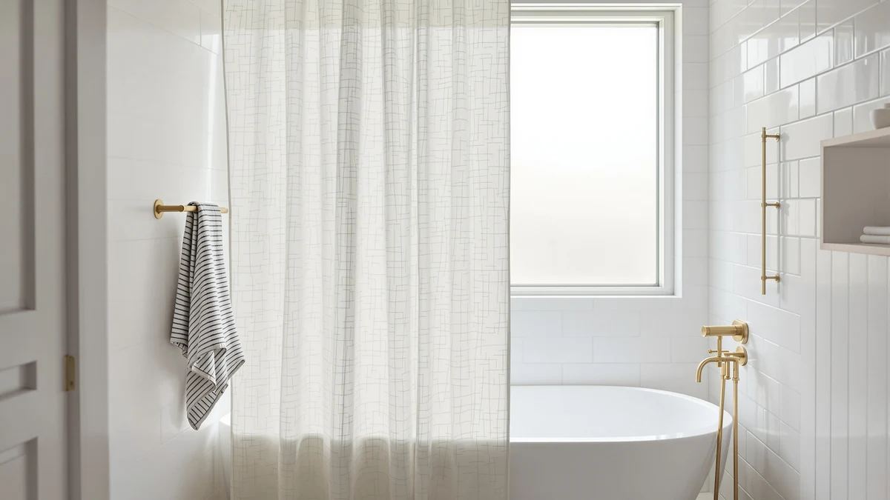

BTTN Boho Scalloped Linen Textured Cloth Shower Curtain Review (2026): Worth It?
Prices and picks verified as of November 2026. Independent, reader-supported reviews.


Quick Answer
This bttn boho scalloped linen textured cloth shower curtain review finds a $37.99, 108-inch by 72-inch curtain in a Polyester and PEVA blend with a scalloped bottom hem and a linen-look texture. Against Mrs.Naturall's 108-inch linen curtain and a second BTTN listing, both $36.99, and DUKIYO's Olive Green curtain at $40.99, the scalloped hem is the detail that sets this pick apart, since none of the four listings currently show a public star rating to compare.
Our pick: BTTN 108x72 Boho Scalloped Linen, $37.99 Check Price on Amazon
Bottom line: our top pick is the BTTN 108x72 Boho Scalloped Linen Textured Cloth Shower Curtain at $37.99.
Things to Know Before You Buy
- The BTTN Boho Scalloped Linen curtain costs $37.99, the second-highest price among the four curtains covered here.
- It's a Polyester and PEVA blend, not true linen, with a scalloped bottom hem and a woven texture built to mimic a linen look.
- It ships in one size: 108 inches wide by 72 inches long, which suits an extra-wide tub or shower stall rather than a standard-width rod.
- Mrs.Naturall's 108-inch linen curtain and a second BTTN listing both run $36.99, a dollar less than this pick, while DUKIYO's Olive Green curtain costs $40.99.
- None of the four listings compared here currently carry a published star rating or review count, so this comparison relies on material, sizing, and price rather than a review track record.
This review weighs the $37.99 BTTN curtain's specs and pricing against three alternatives to see whether the scalloped hem and linen-look texture justify the price. The curtain is a Polyester and PEVA blend that ships in a single 108-inch by 72-inch size, wider than a standard 72-inch curtain, with a scalloped bottom edge and a woven texture meant to read as linen without the upkeep real flax linen needs in a wet bathroom.
We compared it against Mrs.Naturall's 108-inch linen curtain at $36.99, a second BTTN listing also at $36.99, and DUKIYO's Olive Green curtain at $40.99. None of the four listings currently carry a published star rating or review count, so the comparison below focuses on fabric, sizing, and price rather than a proven review history. Shoppers who want the scalloped-hem detail and already need a 108-inch width get the most out of this BTTN pick, while anyone who wants the cheapest option at that width should look at Mrs.Naturall or the second BTTN listing instead.
Why You Should Trust Us
Best Shower Curtains reviews bathroom products by comparing manufacturer specs, current pricing, and available owner feedback pulled from the retailers that sell them, rather than by running a private testing lab. Ilane Tall, our home and bath editor, researched the BTTN Boho Scalloped Linen shower curtain against Mrs.Naturall's linen curtain, a second BTTN listing, and DUKIYO's Olive Green curtain, checking fabric claims, dimensions, and price parity before writing this review. We revisit prices and availability on a regular schedule and say so plainly when a listing hasn't built up a public review record we can check claims against. These four curtains span a four-dollar range, so the comparison comes down to width, hem detail, and material rather than price alone.
Our Research Experience
We do not run a physical testing lab, and we have not hung the BTTN Boho Scalloped Linen curtain in a shower ourselves. Our process instead compares published specs, material composition, and pricing against the shower curtains we already cover, then checks that against what verified owners report about fit, drape, and durability on comparable listings elsewhere. For this pick specifically, that meant lining up its Polyester and PEVA blend, scalloped hem, and 108-by-72-inch cut against Mrs.Naturall's linen curtain, a second BTTN listing, and DUKIYO's Olive Green curtain, since none of the four currently carry a public star rating we can weigh against each other. We flag it clearly when a claim can't be checked against real owner feedback, such as how the scalloped hem holds up after repeated washing, rather than guess at an answer we can't support here.
Overview & Specs

BTTN 108x72 Boho Scalloped Linen
What we like
- 108-inch width fits an extra-wide tub or shower stall where a standard 72-inch curtain leaves gaps
- Scalloped bottom hem adds a decorative detail that a flat-edge curtain doesn't offer
- Textured, linen-look weave reads as a natural fabric without the care that real linen needs in a wet bathroom
Flaws but not dealbreakers
- Ships in one size only, 108 by 72 inches, with no narrower cut for a standard tub
- Costs a dollar more than Mrs.Naturall's linen curtain and a second BTTN listing at the same width
- No published star rating or review count yet, so buyers can't lean on a track record the way they could with a longer-established listing
| Material | Polyester / PEVA |
| Size | 108"W x 72"L (Pack of 1) |
The BTTN Boho Scalloped Linen shower curtain is a Polyester and PEVA blend built to mimic the look of woven flax linen, finished with a scalloped bottom hem instead of the flat, straight edge most shower curtains use. At 108 inches wide, it runs a full three feet wider than a standard 72-inch curtain, which matters most for an extra-wide tub, a walk-in shower, or a double-rod setup where a narrower curtain would leave gaps on either side. The 72-inch length keeps it at a standard drop, so the width is the dimension doing the real work here.
At $37.99, it costs a dollar more than Mrs.Naturall's 108-inch linen curtain and a second BTTN listing at the same width, both $36.99, and about three dollars less than DUKIYO's Olive Green curtain at $40.99. None of the four listings currently show a public star rating or review count, so the extra dollar over the cheaper two options buys the scalloped hem detail rather than a proven track record. Polyester-PEVA blends like this one typically resist wrinkling better than true linen, though the synthetic fabric won't have the breathability some shoppers associate with the real thing.
What We Liked
The 108-inch width is the clearest reason to consider this BTTN Boho Scalloped Linen shower curtain. That's a full three feet wider than a standard 72-inch curtain, so it suits an extra-wide tub, a walk-in shower, or a double-rod setup without leaving gaps on either side. The scalloped bottom hem is also worth calling out on its own: it's a decorative detail you don't get with Mrs.Naturall's flat-edge linen curtain or DUKIYO's Olive Green pick, and it pairs with the linen-look texture to give this curtain a softer, more boho silhouette than a straight-edge alternative. Compared with the other three curtains here, this BTTN pick is the only one built around that scalloped detail.
What Could Be Better
The single-size cut is the drawback that matters most here. It ships only in 108 by 72 inches, so if your rod is a standard 72-inch width, you'd be buying far more curtain than you need. It also costs a dollar more than Mrs.Naturall's 108-inch linen curtain and a second BTTN listing at the same width, both $36.99, which is a small gap but still the highest price among the three 108-inch options. And because none of the four listings compared here currently carry a published star rating or review count, there isn't yet a documented track record to check the fabric or hem durability claims against, so buyers are weighing specs and price rather than verified owner feedback.
Who Is It For?
This BTTN Boho Scalloped Linen shower curtain suits bathrooms with an extra-wide tub, a walk-in shower, or a double rod where a standard 72-inch curtain would leave gaps. It's a reasonable pick if the scalloped hem and linen-look texture matter to the room's style, since neither Mrs.Naturall's nor DUKIYO's listing offers that detail at this width. Skip it if your rod is a standard 72 inches wide, since you'd be paying for width you don't need, or if a flat hem and the lowest price matter more to you than the scalloped detail, in which case Mrs.Naturall's 108-inch linen curtain or the second BTTN listing undercut this pick by a dollar. Anyone set on an olive green colorway instead of a neutral, linen-look texture should compare DUKIYO's pick before deciding.
Alternatives to Consider
If the BTTN Boho Scalloped Linen curtain's price or scalloped hem doesn't fit your bathroom, these three picks round out the comparison: two 108-inch alternatives and one premium-priced option.

Best Value
Mrs.Naturall Linen Curtains 108 Inches
Mrs.Naturall's 108-inch linen curtain runs $36.99, a dollar less than the BTTN scalloped pick, and trades the scalloped hem for a flat edge if the lower price matters more than the detail.
$36.99
Check Price on Amazon
Best Value
BTTN 108x72 Boho Scalloped Linen
This second BTTN 108x72 Boho Scalloped Linen listing matches the same scalloped hem and linen-look texture at $36.99, a dollar less than the main pick, worth checking if the price gap sways your decision.
$36.99
Check Price on Amazon
Premium Choice
DUKIYO Olive Green Shower Curtain
DUKIYO's Olive Green curtain costs $40.99, the highest price in this comparison, and swaps the linen-look texture and scalloped hem for a solid color if that fits your bathroom's palette better.
$40.99
Check Price on AmazonFrequently Asked Questions
Is the BTTN Boho Scalloped Linen shower curtain actually linen?
No. The listing lists a Polyester and PEVA blend, not true flax linen. The textured cloth finish and scalloped hem give it a linen-look appearance, but the material itself is synthetic, which also makes it more water-resistant than real linen would be in a shower.
What size is the BTTN Boho Scalloped Linen shower curtain?
It ships in a single 108 inch wide by 72 inch long cut. That width suits an extra-wide tub or a shower stall where a standard 72-inch curtain leaves gaps, but BTTN does not currently sell a shorter or narrower version for a standard tub.
Is the BTTN Boho Scalloped Linen curtain worth it over Mrs.Naturall or DUKIYO?
At $37.99, it costs a dollar more than Mrs.Naturall's 108-inch linen curtain and a second BTTN listing, both $36.99, and about three dollars less than DUKIYO's Olive Green curtain at $40.99. The extra dollar over the cheaper options buys the scalloped hem detail, which is worth it mainly if that silhouette matters more to you than saving a dollar.
Final Verdict
This comparison comes down to width and hem detail versus price. The BTTN curtain costs $37.99 and delivers a 108-inch extra-wide cut in a Polyester and PEVA blend, finished with a scalloped bottom hem and a linen-look texture. Mrs.Naturall's 108-inch linen curtain and a second BTTN listing both undercut it by a dollar at $36.99, and DUKIYO's Olive Green curtain runs about three dollars higher at $40.99, with none of the four currently carrying a published star rating to lean on. For a bathroom with an extra-wide tub or walk-in shower where the scalloped hem matters, BTTN's Boho Scalloped Linen curtain is the pick worth the extra dollar over Mrs.Naturall. Shoppers chasing the lowest price at that width or a solid olive color instead should compare Mrs.Naturall or DUKIYO before deciding.